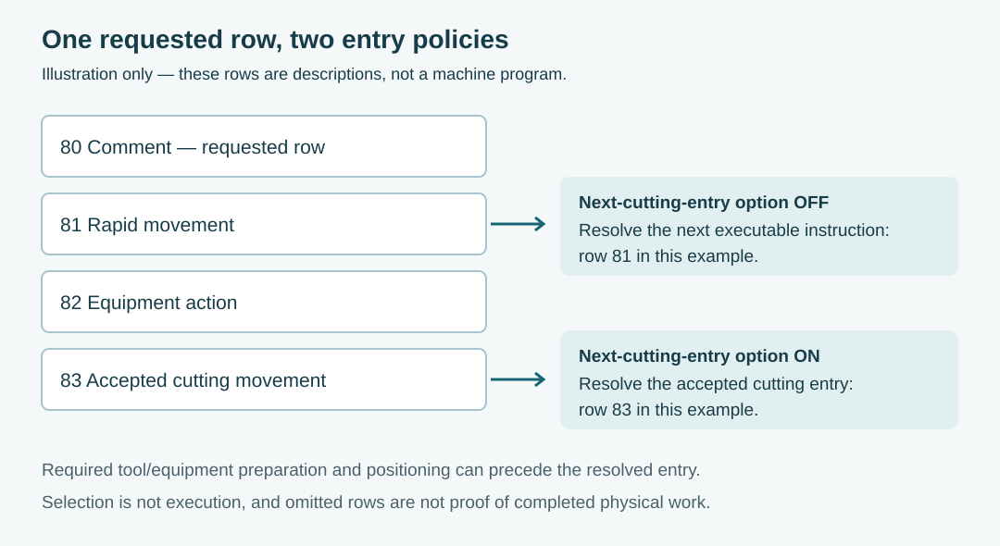

RADONIX · ROUTERXYZBC+TC · CHAPTER 18
Operator Manual · English · 9 October 2026
Starting from a Selected Line
Choose a deliberate new entry in a prepared program, understand what selection changes, and check the tool, approach and unfinished work before requesting Run.
Expanded draft for review. A valid line number is not approval to enter a partially machined job. The approved recovery plan and actual setup determine whether the selected entry is suitable.
18.1 Understand when a selected start is the right decision
Starting from a selected line means deliberately choosing a new entry in the prepared program. You are asking the application to prepare execution from that part of the file rather than simply continue the controller's retained progress. The choice can be useful after an approved recovery decision, but it must match the actual condition of the partly machined workpiece.
A typical example is a job that has been stopped and reset after one operation was completed. The responsible person may approve a later operation as the new entry. Another example is a supervised training exercise in which a known portion of a program is being demonstrated. In both cases, the entry is chosen for a reason that can be explained before the machine moves.
Do not replace an ordinary continuation unnecessarily
After a normal Pause, the controller can retain progress within a movement. Ordinary Run can use that retained position when the conditions remain valid. Selecting a source line instead creates a new starting decision. A line can represent a long cut, so selecting it is not equivalent to restoring the exact point at which the cutter stopped.
If your intention is only to continue a known paused cut, use the procedure in Chapter 17. Do not open Start Line simply because a row is highlighted or because you want the viewer to look tidy. The application separates inspection of text from the instruction that defines a new entry.
| Situation | Appropriate question | Decision |
|---|---|---|
| Known ordinary Pause with valid retained progress | Can the original cut continue under the recovery procedure? | Usually review ordinary continuation rather than create a new line entry. |
| Reset completed | Should the whole job repeat or only an approved later portion? | Choose a fresh start or a deliberate selected entry after assessing the work. |
| Tool or work position is uncertain | Has the actual machine state been established? | Resolve the uncertainty before choosing any entry. |
| Inspecting the file or preview | Am I only locating a feature? | Use inspection selection; no start request is needed. |
| Approved demonstration or rework | Is this entry and approach suitable for the actual setup? | Use the documented line and verify preparation before Run. |
A valid number is only the first check
The dialog can check whether a number lies within the file. The execution preparation can check whether an appropriate executable entry exists and whether the required tool state can be established. These checks do not determine whether earlier material removal was completed correctly, whether a clamp was moved or whether entering the work at this point is appropriate for the cutter.
As an operator, you do not need to design a restart strategy by reading every instruction as a programmer. You do need a clear approved entry, the correct file revision, a known workpiece state and an explanation of the expected first operation. If those are missing, obtain the necessary setup guidance before choosing a line.
Example: the interrupted movement is a long side of a pocket
The cutter stopped halfway along that side. Selecting its source line does not mean “resume at the halfway point.” It establishes a new entry associated with the program line. The retained ordinary continuation and the new selected entry must therefore be treated as different choices.
Selection itself does not start motion. It records the intended entry for a later Run and changes the previewed progress. This separation gives you time to inspect the choice and perform the remaining checks. Use that time deliberately rather than selecting a line and immediately pressing Run as one unexamined gesture.
18.2 Read physical line numbers and identify the exact file
The line number used by Start Line is the physical position of a row in the loaded source document, beginning at 1. Comments and blank rows occupy physical lines too. This number is different from an optional N number written inside the program text.
Use the number shown beside the source row, not a number that happens to appear in its text. If a supervisor gives you a restart instruction, it should identify the file revision and clarify that the number refers to the physical source line. A familiar feature name without an exact file identity is not enough to make the selection repeatable.
Compare the two numbering systems
| Physical row | Illustrative text | What Start Line uses |
|---|---|---|
| 1 | (Training example) | Enter 1 to request this physical row. |
| 2 | Blank row | It still counts as row 2. |
| 3 | N100 ... | The requested physical number is 3, not 100. |
| 4 | N110 ... | The requested physical number is 4, not 110. |
| 5 | (Next operation) | This comment is physical row 5. |
The extract is a numbering illustration, not an executable machining program. Its purpose is to show why a file can have only a few physical rows while containing much larger N labels. Do not type an N label into the dialog expecting it to search for that label.
A row does not always produce a machine action
A comment or blank line can be a valid selection in the dialog. It does not itself command motion or equipment. With ordinary line-entry behavior, the application resolves the first executable instruction at or after the requested row. With next-cutting-entry behavior enabled, it looks for the next accepted cutting entry instead. The resolved line can therefore be later than the number you entered.
A valid row near the end of the document may have no executable work after it. Similarly, it may have no remaining accepted cutting entry for the cutting-entry mode. These conditions are checked when preparing the start; the ability to select a number within the document is not a guarantee that Run will accept it.
File identity must travel with the line number
Adding a comment or inserting a blank row shifts physical line numbers below it. A saved restart instruction such as “start at line 120” can therefore become wrong after an edit, even when the cutting shape looks unchanged. Recheck the physical row and its surrounding text whenever the file has been modified or reloaded.
The application includes the opened file path in the Start Line title when it can associate the displayed document with that opened file. A generic dialog title is not evidence of a particular disk file. Confirm identity through the loaded program and its approved revision; do not rely only on a short basename that may exist in several folders.
Example: a revised file contains ten new comment rows
The approved operation used to begin at physical row 80. In the revised file, ten rows were inserted above it. Row 80 now refers to different content. Use the revised job information and inspect the actual row instead of carrying the old number into the new document.
When recording or reporting a selection, include the full file identity, revision where used, physical line number and a short description of the operation. A screenshot of the relevant text can help, but it should retain enough surrounding context to distinguish the intended entry from a similar operation elsewhere in the file.
18.3 Prepare the job and understand an unavailable Start Line control
Before opening Start Line, finish the recovery or setup decisions that justify a new entry. Confirm the actual workpiece, the completed operations and the work that remains. The dialog helps you choose a row; it cannot decide whether entering the material there is suitable.
The application makes the dialog available when a successfully compiled document with source lines is present, loading and connection transitions are not active, the main program is not active, and the controller is not busy. A stationary-looking head does not establish all of these conditions. A managed tool-change wait can still be an active program state.
Selection readiness and motion readiness are separate
The conditions for opening the dialog are not identical to the conditions for Run. You may be able to inspect and select a line while a later motion prerequisite is still unmet. Conversely, the dialog can remain unavailable because another operation is active even though the program text is visible.
Run additionally requires the relevant path state, completed homing for all configured axes, an operational machine connection and no conflicting preparation or pending stop/reset. The selected entry also has its own program and tool checks. Do not interpret an enabled Select button as permission to machine.
| Check | Required understanding | If unresolved |
|---|---|---|
| Recovery decision | Why a new entry is needed instead of ordinary continuation. | Return to the interruption review in Chapter 17. |
| Document | The correct file has finished preparation successfully. | Resolve loading or preparation problems first. |
| Machine activity | No conflicting operation is active while choosing the new entry. | Complete or recover that operation through its proper procedure. |
| Partly machined work | Earlier required work is complete or explicitly accounted for. | Obtain the appropriate setup or rework decision. |
| Tool and equipment | The expected entry tool and required operating conditions are known. | Resolve the setup before requesting Run. |
| Entry and approach | The selected operation and the route into it are suitable. | Review the path and physical clearance. |
Do not reset simply to unlock a control
If Start Line is unavailable during an unfinished tool operation, a reset is not proof that the physical operation has been recovered. It changes program state and may discard the retained continuation you wanted. First establish why the machine is busy and what remains unfinished.
Likewise, a warning from program preparation is not solved by choosing a row after the reported problem. The start selection works with the prepared document. It is not a way to run a supposedly valid fragment of a file whose required preparation was rejected. Use the loading and diagnostic procedure in Chapter 14.
Example: the head is still but a tool exchange is waiting
The program is waiting for a tool operation, and Start Line is unavailable. The lack of visible travel does not mean the program is free for a new entry. Identify the exchange state, complete its recovery and then decide how the machining program should restart.
Once the dialog is available, inspect its initial line rather than assuming it is a recommended entry. The application prefers an already pending start request; otherwise it uses the currently selected viewer row, or the first line if there is no selection. This is a convenient starting point for the dialog, not an assessment of the workpiece.
Keep the approved entry information beside the screen while selecting. State the operation, tool and expected first movement in plain language. If the only reason you can give is “this row is close to where it stopped,” the restart decision needs further review before it becomes a machine command.
18.4 Use the Start Line dialog step by step
Open Start Line from the main window when the application permits it. The dialog presents the loaded source document, its physical line count, a line-number entry and the Select and Cancel actions. It is a resizable inspection-and-selection window. It does not edit the program text.
Begin by checking the title and document identity. Then locate the approved entry and read the surrounding lines. The number displayed when the dialog opens may come from an earlier pending request or the main viewer's inspection selection; it is not automatically the line recommended for this job.
Enter or point to the required row
- Read the line count.
The requested physical line must be between 1 and the displayed number of lines.
- Type the number or single-click a source row.
A valid typed value updates the preview selection. Clicking a row places its physical number in the entry box.
- Check the selected text.
Verify the operation and neighboring instructions against the approved entry information, not only the number.
- Confirm with Select when the choice is intentional.
The dialog closes and the application records the start request if its conditions still permit it.
- Review the main-window result.
Check the report and previewed progress before considering Run. Selection alone has not started the machine.
| Control or gesture | Result | Operator check |
|---|---|---|
| Line-number entry | Accepts a whole physical line number within the document. | Use the margin number, not an N label or a coordinate. |
| Single click on a row | Copies that row's physical number to the entry and previews it. | Confirm deliberately when ready. |
| Select | Confirms the valid dialog selection and closes the window. | Review the recorded start intention in the main window. |
| Double-click on a row | Sets that row's number and immediately confirms the dialog. | Use single clicks if you are still inspecting. |
| Cancel | Closes without committing a new start request. | The last previewed row can still be highlighted in the main viewer. |
Recognize invalid number entry
The number must be a valid whole number from 1 through the file's line count. Zero, a number beyond the end, an empty entry or nonnumeric text does not produce a valid selection. The dialog disables Select while the entry is invalid. It may continue to show the last valid previewed row, so the highlight alone does not prove the typed value is acceptable.
Replace an invalid value with the intended physical number and recheck the visible row. Do not keep pressing Select while it is disabled. The entry is deliberately limited in length according to the document's line count; a long pasted value should never be assumed to have been accepted exactly as supplied.
The dialog assigns its confirmation and cancellation actions to the standard Enter and Escape dialog controls. Use the clearly labelled buttons while learning the workflow, and remember that keyboard focus can affect which control receives a key. A double-click in this dialog is confirmation, not just a faster way to inspect text.
The actual Start Line dialog
Capture the delivered English dialog with a harmless training file. Label the file title, physical line count, number entry, previewed row, Select and Cancel. Include an N label in the text if available and distinguish it from the physical margin number.
Suggested file: assets/images/18-start-line-dialog.png.
After confirmation, stay in the review stage. The selected line can still resolve to a later executable or cutting entry, and preparation may require tool and equipment actions. The next sections explain how to recognize these effects before issuing the explicit Run request.
18.5 Distinguish confirmation, cancellation and a main-view double-click
The main viewer can highlight a row for inspection without changing the intended next start. The Start Line dialog can also preview a row without committing it. A confirmed selection is a separate action. Keeping these meanings distinct is especially important after cancelling a dialog or returning to a previously paused job.
When you confirm a valid selection, the application records a new requested start line and marks preceding rows as completed for preview purposes. It writes a corresponding entry to the operation report. No program line is executed by this selection action, and the machine does not start merely because the dialog closes.
Cancellation leaves the previous start intention alone
Cancel means “do not commit this new dialog choice.” It does not necessarily mean “clear every earlier start request.” If a start request was already pending before you opened the dialog, cancelling a different preview leaves that earlier request in place.
The main viewer can still retain the last valid row you previewed in the cancelled dialog. Its highlight may therefore differ from the pending start request. This is intentional inspection behavior, but it can be misleading if you read a highlight as a restart instruction.
| Action | Inspection highlight | New start request? |
|---|---|---|
| Single click in the main source viewer | Selects a row for inspection. | No. |
| Type a valid number in Start Line | Previews that row inside the dialog. | Not until confirmation. |
| Confirm with Select | The chosen row remains available for inspection. | Yes, when accepted by the application. |
| Cancel after previewing another row | The previewed row can remain selected in the main viewer. | No new request; an earlier pending request is not cleared by Cancel. |
| Double-click a row in Start Line | Selects that row. | Confirms the dialog immediately. |
| Double-click a row in the main source viewer while permitted | Selects and previews the new entry. | Records a start request directly, without the dialog. |
Example: line 80 was confirmed, then line 120 was only previewed
You confirm physical line 80. Later you reopen Start Line, preview line 120 and press Cancel. The main viewer can show line 120 selected while the pending request still refers to line 80. Do not press Run on the assumption that Cancel selected 120 or cleared 80. Reopen the dialog and confirm the intended entry deliberately.
The main-view shortcut is still a start decision
A double-click on a source row in the main window records that row as the restart request when the main path is idle, stopped and not active, loading is not under way, and the document is the current one. This shortcut does not pass through a separate confirmation dialog. Use single clicks while exploring the program.
If a double-click is not accepted, it does not create an entry merely because the row looks selected. Check the recorded result. The shortcut's availability also does not establish all later Run conditions; machine readiness and start preparation are still checked separately.
If you accidentally choose the wrong row, stop at the review stage. Confirm the correct approved entry before Run. If your intention is to abandon selected-start operation entirely, use the appropriate stopped-program reset or new-job procedure and account for its effect on retained progress. Cancel in a subsequently opened dialog is not a universal “undo last start selection.”
When handing over the machine, state the confirmed requested line and file identity rather than asking the next operator to infer them from the highlighted row. This keeps inspection activity from silently changing the meaning of the next movement request.
18.6 Understand the requested line and the resolved entry
The requested line is the physical row you confirm. The resolved entry is the executable operation the application prepares from that request. These can differ, and the difference matters when predicting the first movement. A comment, blank row or transfer before a cut may lead to a later entry.
The setting named StartFromNextCuttingLine determines whether a fresh or explicitly selected start searches for the next accepted cutting entry. In the reviewed factory settings it is disabled by default, but the installed saved value may be different. Establish the machine's intended policy rather than assuming the default applies.
With the option disabled
An explicit line selection prepares the first executable instruction at or after the requested row. That instruction can be an equipment action or a rapid movement as well as a cutting movement. Blank and comment rows advance to the next executable instruction. Earlier required state is still considered; disabled does not mean “ignore all context.”
The entry position is based on the program state preceding that instruction. Selecting a motion line does not mean the machine should jump directly to that line's endpoint and consider the movement finished. The application prepares an entry from which the selected operation can proceed.
With the option enabled
The application searches the prepared, controller-accepted geometry for a cutting entry at or after the requested row. A later row can become the resolved entry if intervening rows are not accepted cutting geometry. The required entry state is prepared, and the machine may perform tool acquisition and positioning before the cutting movement begins.
| Condition | Option disabled | Option enabled |
|---|---|---|
| Requested row is a comment | Advance to the next executable instruction. | Search for the next accepted cutting entry. |
| Next instruction is a rapid move | It can be the selected executable entry. | The search can continue to later cutting geometry. |
| No cutting remains | A remaining non-cutting instruction may still be an executable entry, subject to other checks. | The cutting-entry request cannot be satisfied. |
| Ordinary continuation of retained progress | Uses the retained cursor. | Also preserves ordinary partial-motion continuation; it is not automatically a new line selection. |

Keep the policy consistent with the confirmed request
The application captures the option when it records an explicit line selection. Do not change the setting afterwards and assume an already pending selection silently adopted the new policy. If an authorized policy change is needed, review the job and confirm the intended line again so the request is deliberate and understood.
The report records the requested line and the cutting-entry choice at selection, and records the selected start when Run is accepted. Use this information to explain an entry that resolves later than expected. Do not interpret a later line as proof that the intervening physical work was completed.
If the application cannot find an accepted cutting entry, investigate the intended operation and remaining file. Do not move the request backward or forward at random until a start is accepted. A different line is a different machining decision, and the correct entry depends on the approved work and setup.
18.7 Understand why earlier equipment actions can still matter
A machining program establishes conditions as it runs. An earlier instruction may select a tool, request a spindle speed or set the spindle direction. A later cutting line relies on that established state even when its own text does not repeat it. Starting in the middle therefore needs more than locating the geometry of the next cut.
The application prepares supported required equipment state from the program before entering the selected portion. Some earlier actions can be replayed to establish that state. This is why the machine can perform an operation whose original source line is above your selected line without having restarted all the earlier machining.
Persistent state is different from a one-time action
For the reviewed application, the latest relevant spindle-speed request and spindle state are treated as continuing conditions. A tool-change request establishes required tool state. Other actions can be one-time operations associated with a particular point in the program. The application does not simply execute every earlier line again.
For example, if earlier instructions started and later stopped the spindle, the state at the chosen entry is not necessarily “spindle running” just because a start instruction exists somewhere above it. The latest relevant state matters. If that state is unsuitable for the proposed cut, the entry or job needs review; the operator should not assume the application will replace it with the state they expected.
| Earlier content | Role in entry preparation | Operator implication |
|---|---|---|
| Tool request | Can establish the tool required before entering the selected work. | Expect tool preparation even when its original row is earlier. |
| Spindle-speed request | The relevant retained request can be restored. | Check the expected speed; selection does not mean the current manual value will necessarily remain. |
| Spindle direction or stop | The applicable spindle state is considered. | Do not assume every selected cutting entry implies the same spindle action. |
| Earlier one-time operation | Not generally replayed solely because it occurred before the requested row. | Account for any physical result that the later work depends on. |
| Earlier cutting moves | Not physically completed by preparing the selected entry. | Verify that omitted material removal is already done or explicitly unnecessary. |
Do not treat all skipped rows alike
When cutting-entry mode advances beyond the requested row, applicable actions between the request and the resolved cutting entry can still be included in preparation. That interval is different from the portion before the requested row. A later resolved cutting line is not a promise that everything above it has been ignored.
The prepared equipment actions also follow the application's defined ordering. They do not have to appear as a simple replay of all earlier rows in original textual order. You do not need to learn the internal ordering rules as a programmer; you need to know the expected tool, equipment conditions and physical preparation for this job.
Example: the selected cut uses a tool requested earlier
The approved entry is a cutting line after an earlier tool change. The spindle currently holds a different cutter. The application can prepare the earlier required tool before arranging the approach. The fact that its tool-change row is above the requested line does not make the exchange unexpected.
Required-state preparation does not inspect clamps, restore a shifted panel or verify that an earlier pocket has actually been cleared. It also cannot turn an unreviewed saved equipment program into a guaranteed machine sequence. Use the installed machine's approved procedure and resolve any difference between expected and observed equipment behavior.
If a selected entry depends on a special earlier action whose physical result is not established, obtain guidance from the person responsible for the job. Do not compensate by manually toggling outputs or editing the control program. The selection procedure is an operator workflow for an approved entry, not a method of reconstructing an unknown machining process.
18.8 Verify the entry tool, compensation and approach route
A selected start can require a different tool from the one currently in the spindle. Before Run, identify the tool needed for the approved entry and compare it with the actual setup. The application can prepare a required entry tool, but the operator must still ensure that tool numbers, installed cutters and approved compensation data agree.
With automatic tool change enabled, the start check examines the prospective tool state before the first spindle start or cutting movement. It can reject a missing tool, an unavailable requested tool or an unconfirmed clamp condition. Passing this check is not physical proof that a later exchange will succeed; the machine checks its operating conditions during execution as well.
Tool preparation precedes entry positioning when required
When the selected entry carries a required earlier tool request, the application acquires that tool and waits for compensation acknowledgement before proceeding to the entry positioning. This applies even when other equipment actions appear around the entry. The first physical operation after Run may therefore be a tool preparation rather than travel toward the selected cut.
Compensation relates the stored tool geometry to the required cutting-point position. A tool number by itself does not establish correct length or offsets. If the tool was replaced during recovery, follow Chapter 12 and the approved setup procedure before using the new entry.
| Item | Confirm | Do not assume |
|---|---|---|
| Required tool | The selected operation's cutter and tool number match the approved job. | That the currently displayed number is always the tool required at the entry. |
| Grip and actual identity | The physical spindle/tool state is established. | That changing the recorded number corrects an uncertain exchange. |
| Length and offsets | Compensation is appropriate and its application is completed. | That a correct tool number proves the cutting height. |
| Entry location | The prepared position agrees with the intended work reference and part. | That selecting a line moves the work origin to the head. |
| Approach clearance | The complete route clears the actual stock, fixtures and accessories. | That preview lines represent every obstacle or the full tool holder. |
| Following equipment actions | The spindle and auxiliaries will have the required state before cutting. | That a speed value alone proves spindle readiness. |
The approach can differ from the original file's travel sequence
A new entry is prepared without physically retracing every earlier movement. The positioning operation may lift Z to its configured maximum travel coordinate, move horizontally at that level, and then approach the destination in Z when horizontal repositioning is needed. A height-only approach may be simpler. Review the full route described in Chapter 9.
The configured clearance is not a live measurement of the fixture. A clamp added during recovery, a tall remaining feature or a changed holder can make the approach unsuitable even when its coordinates lie inside the configured travel range. Resolve that physical issue before requesting Run.
The main feed percentage applies to the main machining path. It does not provide a universal speed limit for separate tool-exchange and entry-positioning operations. Do not set main feed to zero and assume preparation motion is prevented. Understand which movement will occur first and which configured speed applies to it.
Example: a replacement cutter has a different length
The correct tool number is selected, but the replacement cutter projects farther from the holder. The old compensation and a previously acceptable approach cannot be assumed valid. Re-establish the tool data and review the route before attempting the selected cut.
Disabling automatic tool change to avoid a preparation warning is not a valid way to establish the correct tool. If automatic exchange is intentionally disabled for an approved operating mode, the entry must be reviewed under that mode's procedure. The start selection cannot substitute for the operator's knowledge of what is actually in the spindle.
18.9 Read the selected-start preview without mistaking it for completed work
After a start line is confirmed, the application marks preceding source rows as completed for display purposes. This helps show the portion that lies before the requested entry. It does not mean those rows have just been executed or that their physical results exist in the current workpiece.
The selected row remains pending in this preview. The full prepared geometry is retained, allowing you to examine the relationship between earlier and later work. Use the graphical view and source together, following Chapter 15, while keeping the distinction between displayed progress and actual completed machining clear.
Four different kinds of information can appear together
| Indication | Meaning | Not proof of |
|---|---|---|
| Highlighted text row | The row currently selected for inspection. | The confirmed start request, especially after Cancel. |
| Earlier rows shown completed | The selected-start display treats the earlier portion as passed. | Material removal on the actual workpiece. |
| Changed progress percentage | Source-line-based displayed progress. | The fraction of this run already machined. |
| Nonzero elapsed time | Nominal original-program time associated with the displayed preceding portion. | Wall-clock time since the new Run. |
| Position marker | The application's displayed commanded position information. | A physical measurement proving entry clearance. |
The nominal timing display continues to refer to the original whole program. Selecting a later entry can include the omitted prefix in nominal elapsed time, while total remains the original estimate. The display is not recalculated as a stopwatch starting at zero for your selected portion.
Example: progress changes before the machine runs
A training file has 100 physical rows. Confirming row 41 marks the preceding 40 rows as completed in the selection preview, so the displayed source progress can become 40% without any motion. That percentage describes the previewed source position, not completion of 40% of a real part.
If the original nominal program total is 30 minutes and the preceding portion represents 12 minutes, the nominal remaining value is 18 minutes. These values do not mean the operator has already spent 12 minutes cutting this piece.
Inspect the actual entry region
Look at the selected feature from useful directions. Identify the preceding and following movements, cutting depth and surrounding work. A top view alone may conceal a height difference; the first entry may be into material that has not been removed if an earlier operation was omitted.
The prepared path is not a complete material-removal simulation and does not establish clamp clearance. If the approved restart relies on a pocket already being empty or a profile already being open, verify that physical condition through the normal machine-access and inspection procedure. Do not infer it from a completed-path color.
Selected-start preview before Run
Capture the main window immediately after confirming an entry in a known training file, before any Run request. Label the requested physical row, preceding rows shown completed, graphical progress and nominal timing. State visibly that the display changed through selection and no machining was performed by that action.
Suggested file: assets/images/18-selected-preview.png.
After Run prepares the actual entry, the displayed state can reflect the resolved line rather than only the originally requested row. Read the report and observe preparation to understand that transition. If a movement or tool action does not match the approved expectation, use the appropriate interruption procedure instead of explaining it away as a display detail.
For production records, keep the actual completed operations identifiable separately from the preview. A screenshot can document your selection, but it cannot certify the machining that occurred before it.
18.10 Request the selected start and observe each preparation stage
Once the entry has been approved, confirmed and reviewed, Run is the explicit action that can begin preparation and movement. Treat this as a fresh operating decision even when the file has already been partly machined. The tool, work reference, machine location and equipment may differ from their state at the original start.
Before pressing Run, say what you expect first: a tool acquisition, a positioning approach, an equipment action or the beginning of the selected cut. This simple explanation helps expose an unresolved assumption. “It should carry on somewhere here” is not a sufficiently defined entry.
Use a complete selected-start sequence
- Identify the approved entry.
Confirm file identity, physical line and the reason for omitting earlier work.
- Confirm the selection and policy.
Check the recorded request and whether the next-cutting-entry option is part of it. Account for a possibly later resolved line.
- Check the physical setup.
Verify the tool, compensation, work reference, stock, fixtures and approach route.
- Check the operating conditions.
Verify the required spindle and auxiliary state and the actual main-feed setting. Remember that separate preparation movements use their own speeds.
- Request Run once.
Read the response rather than immediately issuing another command.
- Observe preparation through the first cut.
Allow for tool preparation, compensation acknowledgement, positioning and equipment actions. Confirm that the actual operation matches the approved entry.
| Stage | What to look for | What acceptance does not prove |
|---|---|---|
| Request admitted | The report identifies the selected start and pending positioning or execution. | That machining has already begun. |
| Required tool prepared | Expected tool operation and confirmed state, including compensation. | That the approach to the work is complete. |
| Entry positioning | The expected route and destination. | That every physical obstacle was detected by software. |
| Equipment preparation | The expected spindle and other conditions. | That the displayed speed request is a measured speed. |
| First selected cut | Correct feature, tool and physical work condition. | Final part quality or completion of omitted operations. |
The application clears its pending operator selection after the start request is accepted. Execution then has its prepared entry and current state. Reopening Start Line later is not a way to assume the same pending request remains untouched. If a preparation subsequently fails, review the resulting state and report before another attempt.
Do not confuse the accepted request with successful completion of every stage. A tool exchange can be admitted and later fail. Positioning can be interrupted before handing control to machining. Each case requires the relevant recovery checks rather than repeated Run requests.
Example: the selected line is a cut, but the first movement is toward the magazine
The selected operation requires a tool previously requested in the program. Tool acquisition can happen before the entry approach. If that is part of the approved expectation, observe the exchange through its confirmed result. If a different tool or route appears, use the appropriate interruption procedure and investigate the mismatch.
Monitor the first resumed feature closely from the designated operating position. Material conditions may differ from an uninterrupted run, especially near an already cut region. Successful entry preparation does not determine whether repeating or joining that cut produces an acceptable surface.
After entry, the remaining program continues under its normal instructions, including later tool changes and end behavior. Selecting a row is not a single-line execution command. Be prepared for the rest of the job, and use Chapter 16 for ongoing monitoring and Chapter 17 if another interruption occurs.
18.11 Resolve rejected entries and recheck selection after changes
If a selected start is rejected, retain the message and identify which part of preparation failed. A valid number in the dialog can still lead to a rejected start because no suitable executable entry remains, a required tool is unavailable, a required equipment operation is unavailable or the machine cannot accept positioning.
Do not search for a “working” line by trying neighboring numbers. A line that the controller accepts is not necessarily a suitable restart for the workpiece. Correct the identified problem and re-establish the approved entry before another request.
| Symptom or result | Likely area to investigate | Operator action |
|---|---|---|
| Select is disabled | The typed physical number is invalid. | Enter a whole number within the displayed range and inspect the row. |
| No executable work remains | The selected row has no executable suffix. | Review the intended operation and approved entry. |
| No accepted cutting entry remains | Cutting-entry mode cannot find the requested kind of entry. | Check whether the intended remaining work includes accepted cutting geometry. |
| No accepted row at the selected source line | The text row does not map to a retained controller operation suitable for this entry. | Keep the diagnostic and obtain a reviewed alternative; do not guess. |
| Tool missing, unavailable or clamp unconfirmed | Required entry tool state is not established. | Use the tool setup or recovery procedure. |
| Positioning or operation rejected | Machine readiness, route validation or required equipment availability. | Read the specific report and establish the actual machine state. |
A rejected handoff may follow a prepared selection
The application can prepare the program's entry before the subsequent positioning request is rejected. The display may therefore reflect a selected entry even though no successful approach has occurred. Do not assume that every rejected Run leaves every part of the previous state untouched.
The execution logic retains the need for positioning after a rejected positioning handoff rather than converting a retry into an ordinary direct start merely because a program line is now selected. That protects the sequence, but it does not remove the operator's responsibility to understand why positioning failed.
If tool preparation was accepted and later cancelled, distinguish the original accepted request from the later failure. The pending operator selection may already have been consumed, while the prepared execution state and physical tool stage need review. Use the report, current tool and recovery procedure before deciding whether to retry or choose a new entry.
Know which actions clear the pending request
An accepted program Reset clears the pending start request. Starting a new file-opening operation also clears it, and changing the displayed document clears it. Do not rely on a selection made before a reload or edit, even if the same filename is displayed afterwards.
By contrast, cancelling the Start Line dialog does not clear an earlier pending selection. Confirming another valid line replaces the requested entry. These differences are why the command history is more reliable than the location of a highlight alone.
Example: a corrected file is reopened
You had confirmed row 150, then a corrected revision was loaded. The previous request is no longer the current selection, and its row number may refer to different content. Inspect the revised file and confirm the newly approved entry rather than pressing Run on the old assumption.
A selected-start diagnostic with its context
Use an approved training example showing a rejected entry or a preparation warning. Include the file identity, requested physical line, relevant report and current tool if applicable. Label what failed; do not caption it as a general machine fault unless the message establishes that.
Suggested file: assets/images/18-start-diagnostic.png.
For assistance, provide the file revision, requested physical row, cutting-entry setting, exact message, current tool and last completed physical action. These details help distinguish an unsuitable entry from a machine-preparation problem without requiring the operator to explain internal program structures.
18.12 Practise the selection workflow and complete the final review
Practise selected-start decisions with an approved training file before relying on them in production. The exercise should teach you to distinguish a physical row, an inspection highlight, a confirmed request and the entry that is eventually prepared. These distinctions matter more than choosing a line quickly.
Use Simulation or another training arrangement approved for the machine. Do not create a damaged tool, shifted workpiece or interrupted physical exchange merely to practise recovery. Discuss those cases using the manual and a known example, and involve the responsible setup person where restart suitability requires machining judgment.
A complete training exercise
- Identify the document.
Read the filename and revision. Find a comment, blank row and N label and explain which physical numbers the dialog would use.
- Inspect without selecting a start.
Single-click a source row in the main viewer and explain why this is inspection only.
- Open Start Line.
Check its initial value, line count and document title. Type the approved physical number and verify the visible content.
- Confirm one request.
Use Select and identify the corresponding report entry and previewed preceding portion.
- Practise cancellation.
Reopen the dialog, preview a different row and cancel. Explain why the highlight can change without replacing the earlier request.
- Restore the intended choice.
Confirm the approved entry again and state the captured cutting-entry policy.
- Explain preparation before Run.
Identify the required tool, equipment state, entry position and physical approach. If executing the exercise is approved, observe each actual stage through the first cut.
| Question | Required answer |
|---|---|
| Why is a new entry needed? | A clear approved reason, distinct from ordinary paused continuation. |
| Which file and row? | The exact prepared file revision and physical source-line number. |
| Was the request confirmed? | Yes; it was not merely highlighted or previewed and cancelled. |
| Can the resolved entry differ? | The effect of blank rows, executable content and cutting-entry policy is understood. |
| What earlier work is omitted? | Its physical results are verified or explicitly accounted for by the approved plan. |
| What preparation is expected? | The required tool, compensation, equipment actions and approach route are known. |
| What follows the first cut? | The remaining program sequence, not just one isolated source line. |
| What if preparation fails? | Retain the report, establish the actual state and use the relevant recovery procedure. |
Check your understanding with three situations
A later line is highlighted after Cancel. Does that make it the next start? No. The cancelled preview can remain visible while an earlier confirmed request is still pending. Review and confirm the intended choice.
The selected row is a comment before a rapid move and then a cut. Must execution begin at the comment? No. The entry is resolved from executable content and the selected policy. Required preparation may also precede the resolved operation.
The screen shows substantial progress before Run. Has that amount of machining happened? No. The display can mark preceding rows as passed solely because of the selected-start preview. The workpiece still needs its own completed-work verification.
Record a reproducible decision
For an approved production restart, record the file revision, physical requested line, entry policy, reason for the selection and actual work already completed. Include tool or setup changes made during recovery. This gives the next operator or reviewer enough context to understand the decision without reconstructing it from a screenshot alone.
After machining, inspect the join or restarted region according to the job's quality requirements. Controller acceptance and natural completion do not certify a seamless surface or correct dimensions. If rework was intended, record its actual result rather than treating the selected-start request as evidence of successful rework.
The next chapter, Editing a G-code File, covers a different operation: changing the source itself. A selected start does not edit the file. If an approved correction requires editing, reload and review the resulting document and establish a new entry rather than carrying old physical row numbers forward automatically.
Documentation basis
Checked against the source available on 9 October 2026. This is a source review, not a live-machine restart test. Installed settings and saved equipment programs can differ. Screenshot spaces require images from the delivered application.
RouterXYZBC+TC/MainForm.Machining.csRouterXYZBC+TC/Configuration/Controller/ToolPathLinks.csRouterXYZBC+TC/Configuration/GeneralLinks.csRouterXYZBC+TC/Machining/GCodeInterpreter.csRouterXYZBC+TC/Machining/HeadPositioningCommands.csNT-Interpreter/WinForms/GCodeStartLineDialog.csNT-Interpreter/Controller/RouterExecutionSession.csNT-Interpreter/Controller/RouterToolStartPolicy.csNT-Interpreter/RouterModels.csNT-Interpreter/Controller/RouterToolPathBuilder.csNT-Interpreter/WinForms/RouterProgramPresenter.csRouterXYZBC+TC/Machining/ToolChanger/ToolChangerRoutes.cs